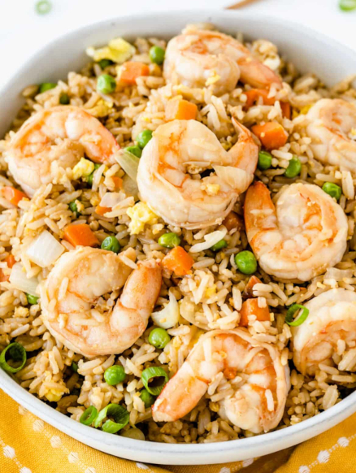

Shrimp Fried Rice

Description
An asian classic
Ingredients
- Day old rice
- Shrimp
- Garlic
- Egg
- Soy Sauce
- Pre-heat a wok on high heat
- Crack egg into the wok and scramble. Throw in the garlic and shrimp, cook until nearly done.
- Toss in the rice and soy sauce, stir well.